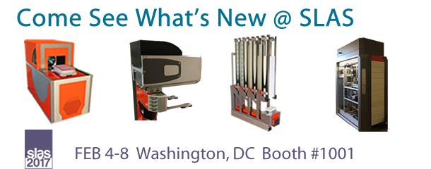

<div id="home" style="position:relative"><!--[if gte IE 9]><div class="fittobox "><iframe src="https://player.vimeo.com/video/198692486?color=ffffff&title=0&byline=0&portrait=0&autoplay=true&loop=true" width="100%" height="100%" frameborder="0" webkitallowfullscreen mozallowfullscreen allowfullscreen></iframe></div><!--[if lt IE 9 ]><div id="jquery-slider"></div><![endif]--><div style="position:absolute;top:425px; width:100%;min-height:100%; background-color:rgba(255, 255, 255, 0.61)"><div class="row"><!--[if lt IE 9 ]><div class="col-lg-2"></div><![endif]--><div class="col-lg-1"></div><div class="col-lg-10 center-block" style="display:table-cell; vertical-align: middle;"><div class="row"><div class="col-lg-1 col-md-1"></div><div class="col-lg-10"><div class="row"><div class="col-lg-6 col-md-12"><div class=""><a href="slas.html"></a></div></div><div class="col-lg-6 col-md-12 "><div class=""><a href="Images/BioNex-Solutions-ISO-Cert.pdf" target="_blank"></a></div></div></div></div></div></div></div></div></div>